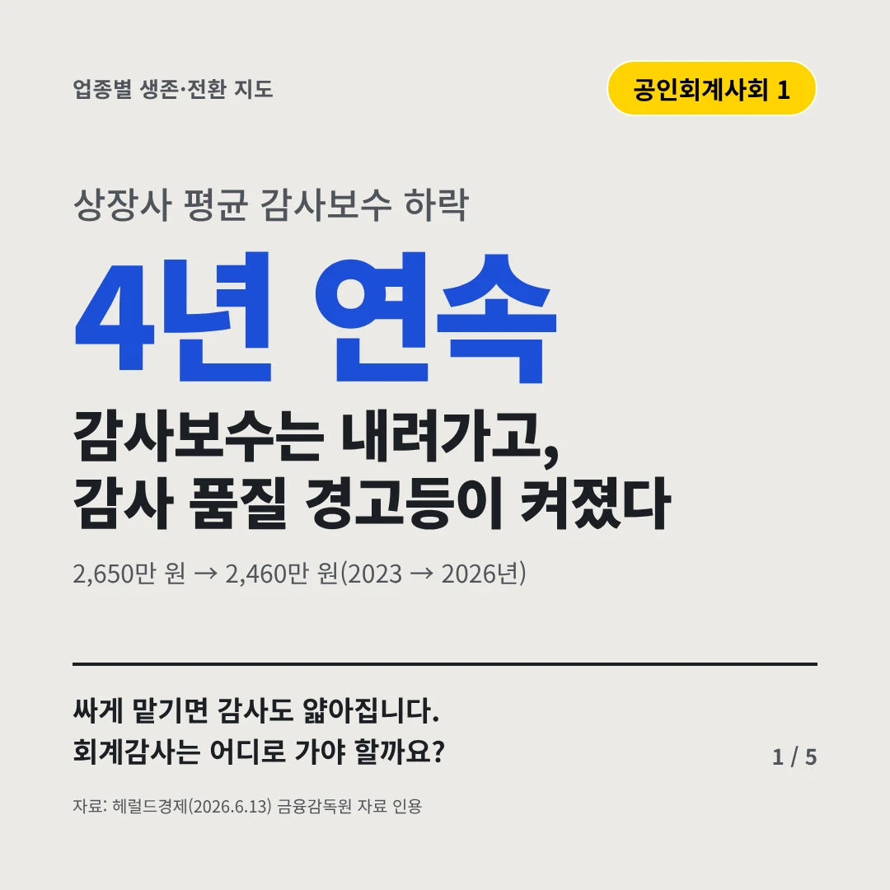
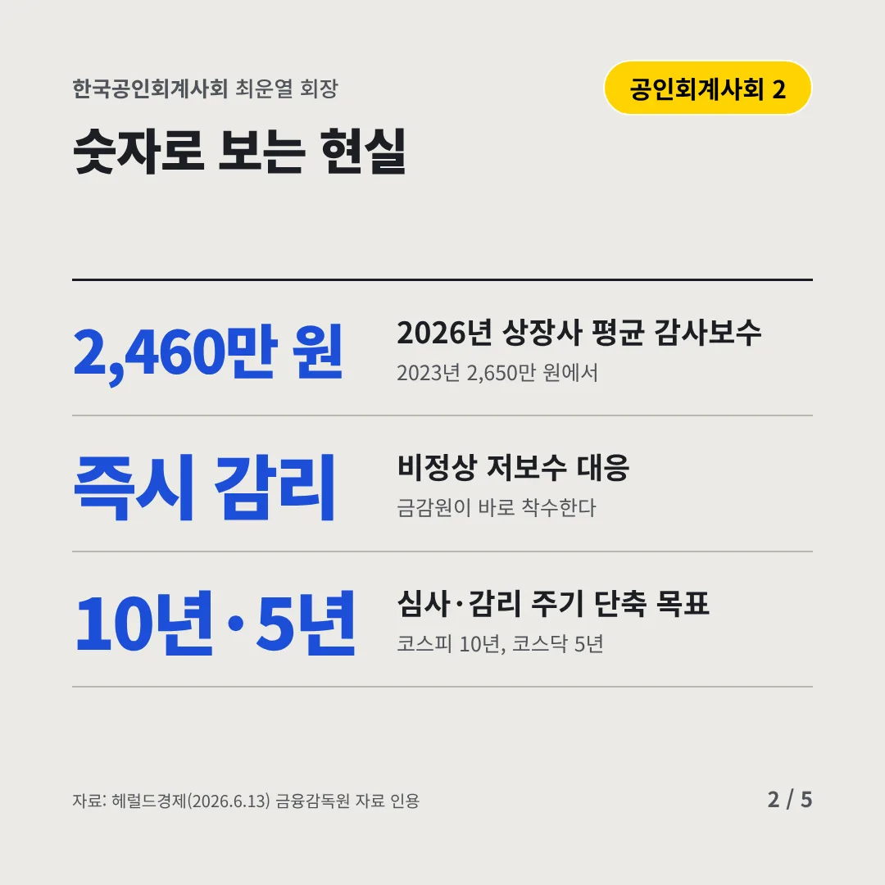
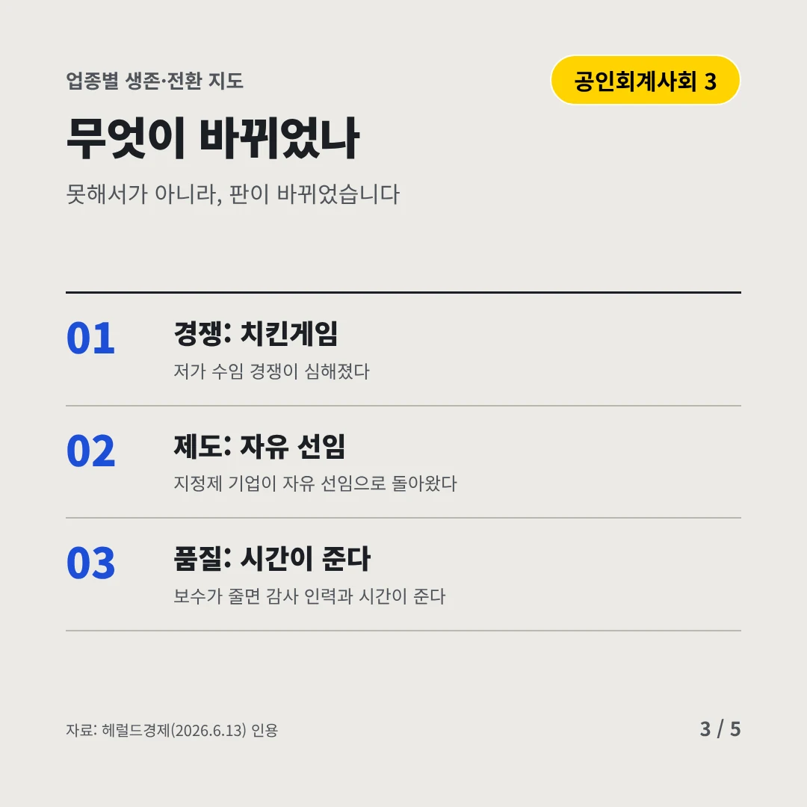
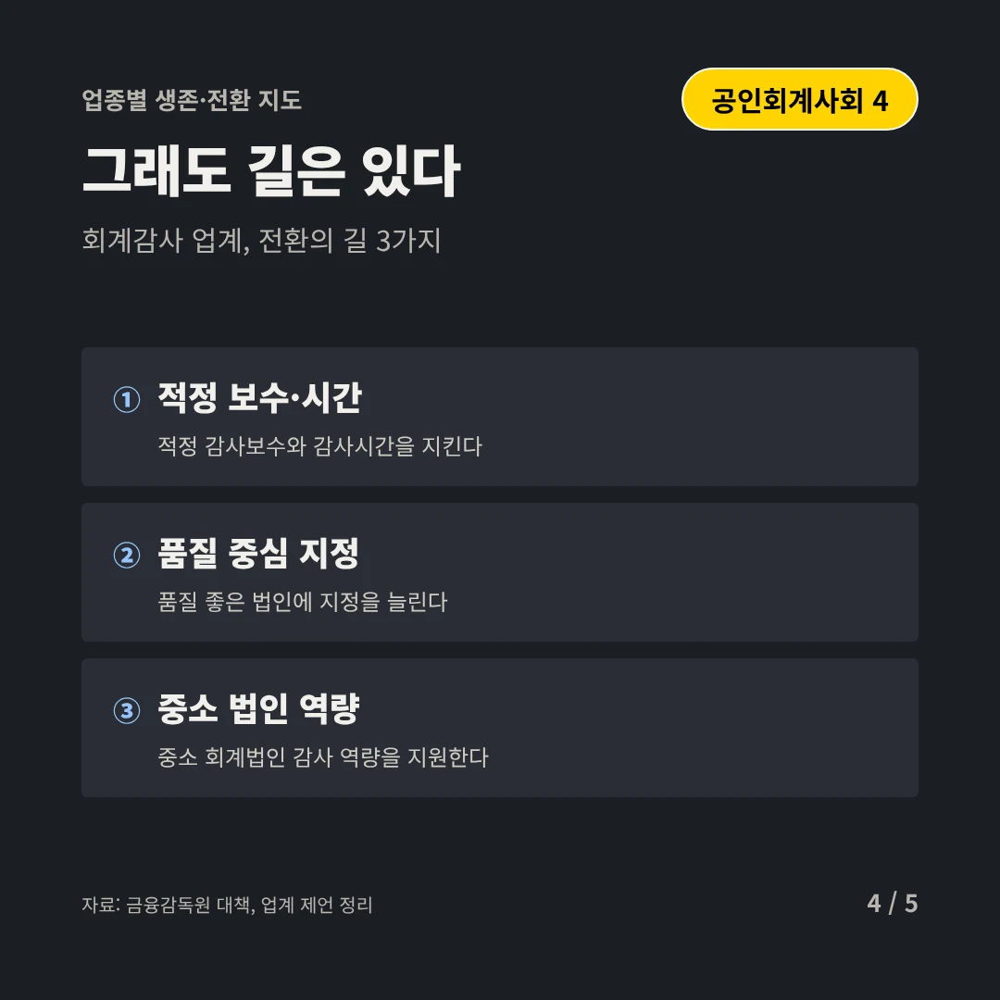
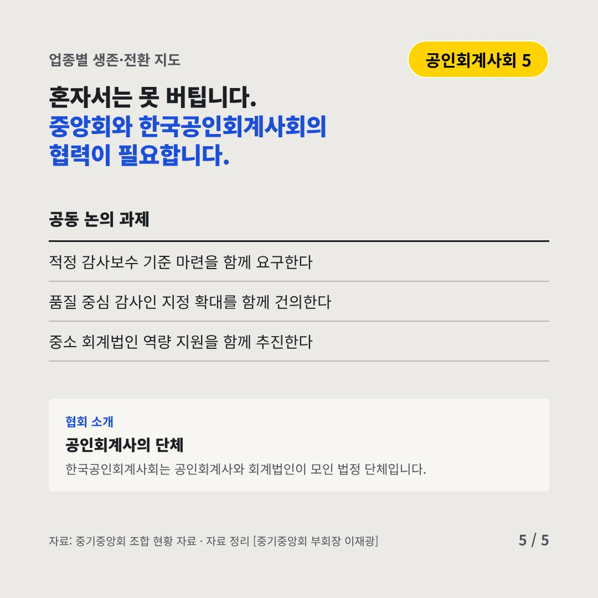
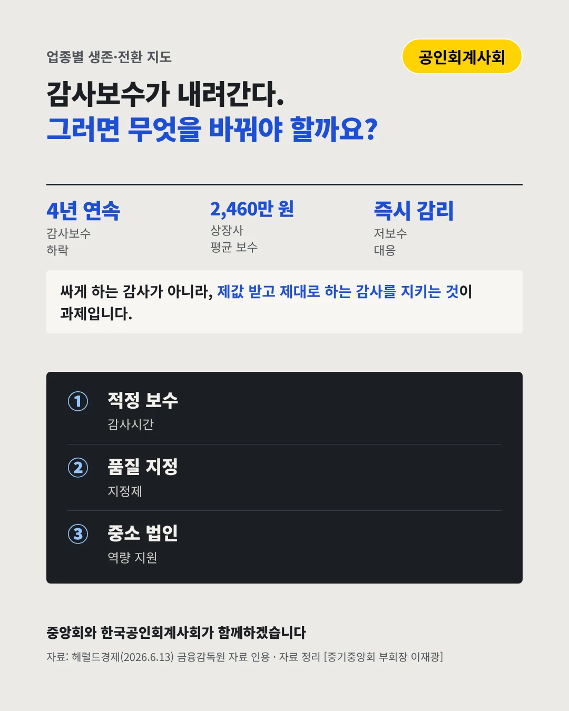

한국공인회계사회
감사보수는 내려가고, 감사 품질 경고등이 켜졌다
4년 연속 상장사 평균 감사보수 하락






싸게 맡기면 감사도 얇아집니다. 회계감사는 어디로 가야 할까요?
숫자로 보는 현실
- 2,460만 원2026년 상장사 평균 감사보수2023년 2,650만 원에서
- 즉시 감리비정상 저보수 대응금감원이 바로 착수한다
- 10년·5년심사·감리 주기 단축 목표코스피 10년, 코스닥 5년
무엇이 바뀌었나
- 경쟁: 치킨게임저가 수임 경쟁이 심해졌다
- 제도: 자유 선임지정제 기업이 자유 선임으로 돌아왔다
- 품질: 시간이 준다보수가 줄면 감사 인력과 시간이 준다
그래도 길은 있다
- 적정 보수·시간적정 감사보수와 감사시간을 지킨다
- 품질 중심 지정품질 좋은 법인에 지정을 늘린다
- 중소 법인 역량중소 회계법인 감사 역량을 지원한다
한 장 요약

협회 소개
한국공인회계사회는 공인회계사와 회계법인이 모인 법정 단체입니다.
자료: 헤럴드경제(2026.6.13), 금융감독원 대책